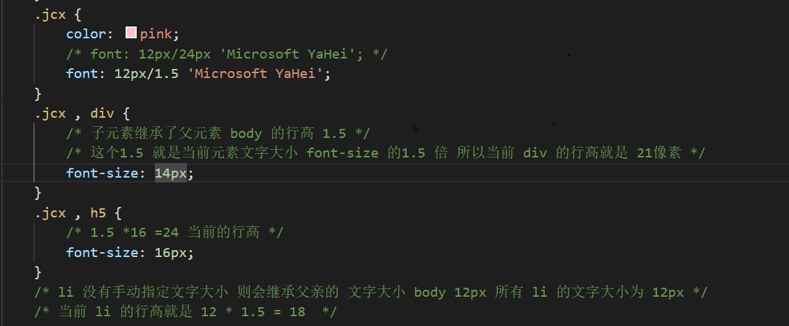
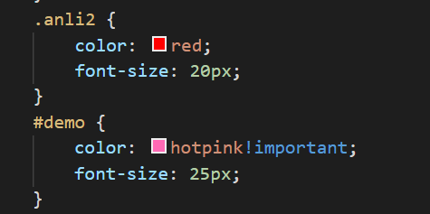
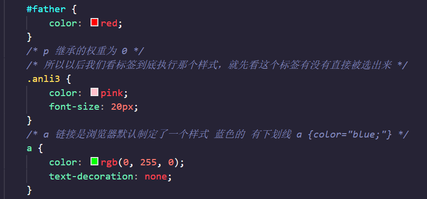
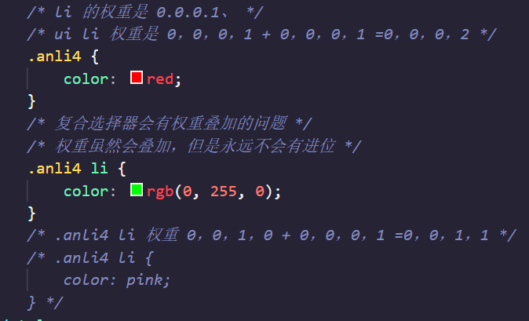

CSS的三大特性
CSS的三个非常重要的三个特性：层叠性、继承性、优先级
本页面目录：
层叠性
继承性
CSS的继承性--行高的继承性
优先级
CSS优先级的权重叠加
1️⃣层叠性 :
相同选择器给设置相同的样式，此时一个样式就会覆盖（层叠）另一个冲突的样式，层叠性主要解决样式冲突的问题
长江后浪推前浪，前浪死在沙滩上
层叠性原则：
样式冲突，遵循的原则是就近原则，哪个样式离结构近，就执行哪个样式
样式不冲突，不会层叠
2️⃣继承性 :
现实中的继承，我们继承了父亲的姓
CSS中的继承：子标签会继承父标签的某些样式，如文本颜色和字号，简单的理解就是：子承父业
- 恰当地使用继承可以简化代码，降低CSS样式的复杂性
- 子元素可以继承父元素的样式（text-，font-，line- 这些元素开头的可以继承，以及 color 属性）
- 继承性口诀：龙生龙，凤生凤，老鼠生的孩子会打洞/li>
3️⃣CSS的继承性--行高的继承性：
- 行高可以跟单位也可以不跟单位
- 如果子元素没有设置行高，则会继承父元素的行高为1.5
- 此时子元素的行高是 : 当前子元素的文字大小 *1.5
- body 行高 1.5 这样写法最大的优势就是里面子元素可以根据自己文字大小自动调整行高
粉红色的回忆
粉红色的回忆
我没有指定文字大小

4️⃣优先级：
当同一个元素指定多个选择器，就有优先级的产生
选择器相同，则执行层叠性
选择器不同，则根据选择器权重执行
选择器权重如下表所示：
| 选择器 |
选择器权重 |
| 继承 或者 * |
0，0，0，0 |
| 元素选择器 |
0，0，0，1 |
| 类选择器，伪类选择器 |
0，0，1，0 |
| id 选择器 |
0，1，0，0 |
| 行内样式 style ="" |
1，0，0，0 |
| !important 重要的 |
无穷大 |
你笑起来真好看

优先级注意点：
- 权重是有4组数字组成，但是不会有进位
- 可以理解为类选择器永远大于元素选择器，id选择器永远大于类选择器，以此类推
- 等级判断从左向右，如果某一位数值系相同，则判断下一位数值
- 可以简单记忆法：通配符和继承权重为 0 ，标签选择器为 1 ，类（伪类选择器）为 10 ，id选择器 100 ，行内样式表为 1000 ，!important无穷大
- 继承的权重是 0 ，如果该元素没有直接选中，不管父元素权重多高，子元素得到的权重都是 0
你还是很好看
我是单独的样式

5️⃣CSS优先级的权重叠加：
权重叠加：如果是复合选择器，则会有权重叠加，需要计算权重
- div ui li ---> 0, 0, 0, 3
- .nav ui li---> 0, 0, 1, 2
- a: hover---> 0, 0, 1, 1
- .nav a---> 0, 0, 1, 1
大猪蹄子
大子
猪尾巴

🌈权重的两个练习题：点击查看
返回标题